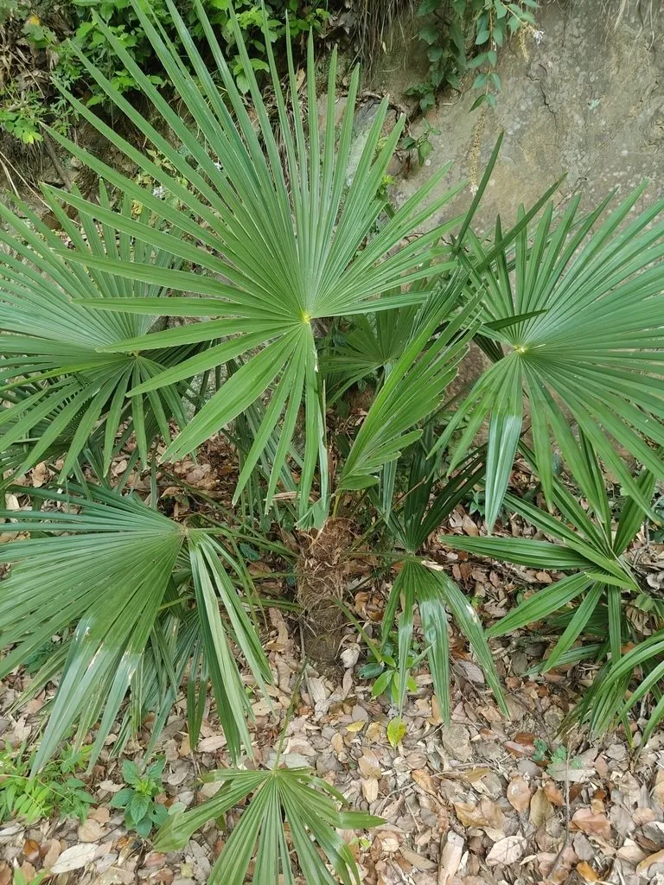

乔木 · 植物界
棕榈 Trachycarpus fortunei

中国南方常见的常绿乔木，树干被棕毛、叶呈掌状扇形，棕皮可制绳与蓑衣，是传统的经济与观赏树种。
- 分类
- 门被子植物门纲百合纲目棕榈目科棕榈科属棕榈属
- 栖息环境
- 海拔 1500 米以下的山坡、村旁与庭院，喜光耐寒耐旱
- 地理分布
- 中国长江流域以南各地，日本、印度也有分布
- 保护级别
- 暂无评估；中国未列入国家重点保护野生植物名录
物种志
棕榈为常绿乔木，高可达 10 m，树干圆柱形、不分枝，表面被棕褐色的棕毛；叶片簇生于干顶，掌状深裂，呈扇形，裂片先端下垂，叶柄两侧具刺齿。花期 4–5 月，肉穗花序腋生，雌雄异株，花小、黄绿色；核果肾形，成熟时蓝黑色，被白粉。
棕榈原产中国、日本及印度，中国长江流域以南常见，喜光、耐寒、耐旱，对土壤要求不严，在村旁、山坡与庭院都能生长。叶鞘纤维即“棕毛”，耐腐、耐磨，可制绳索、蓑衣、棕垫与刷子，是中国传统的手工业原料；木材可制器具；棕榈的叶与根可入药。棕榈树形挺秀、四季常青，也是南方园林与庭院中常见的观赏树种，在江南一带常与芭蕉、竹子搭配种植。
形态与习性
- 株高可达 10 m，树干不分枝
- 花期4–5 月，雌雄异株
- 果期10–11 月，核果蓝黑色
- 光照喜光，也耐半阴
- 水分耐旱，怕积水
- 土壤适应性强，各类土壤均可生长
- 主要用途棕毛制绳与蓑衣、庭院观赏、叶与根入药
趣味知识
- 棕榈树干表面的棕褐色纤维叫“棕毛”，可以制绳索、蓑衣和棕垫。
- 棕榈的叶片呈掌状扇形，是南方庭院中很有辨识度的常绿树种。
- 棕榈叶柄两侧长有刺齿，采割棕毛时需要小心划伤。
- 棕榈耐寒性较强，在长江流域冬季仍能保持常绿。